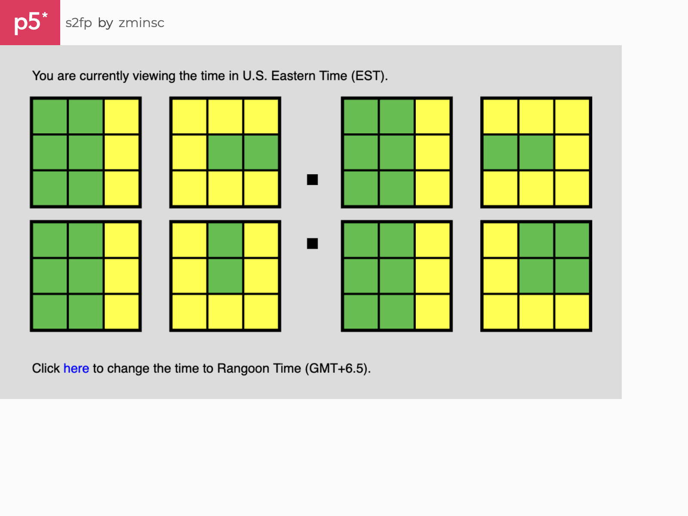

🧩 s2fp
In this project, we designed a browser-based p5.js "clock" that creatively interprets time using the system's seconds, minutes, and hours. As a speedcuber, I knew we had to pull out the 3x3 Rubiks cubes for this one.

In this project, we designed a browser-based p5.js "clock" that creatively interprets time using the system's seconds, minutes, and hours. As a speedcuber, I knew we had to pull out the 3x3 Rubiks cubes for this one.